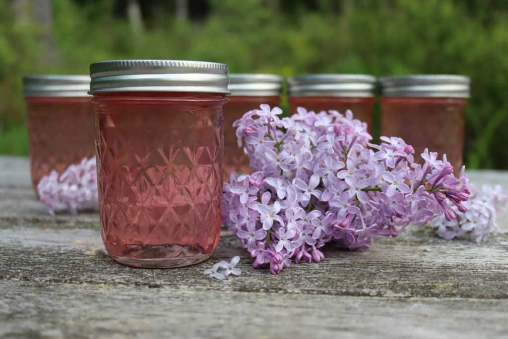

Lilac Jelly

Using flowers for food ~
Seeing all those beautiful blooms in spring inspires me to use my flowers around the house before they wilt. 🌸
Ingredients:
- 4 cups lilac blossoms
- 4 cups water
- 2 tbsp lemon juice
- 4 cups sugar
- 1 box (1.75 oz) pectin
Steps:
- Separate 4 cups of lilac blossoms from their stems, carefully removing any green parts.
- Pour 4 cups boiling water over the top of the lilac blossoms and allow the tea to infuse for about 10 minutes. It should be a turquoise color (which will change to pink when lemon juice is added).
- Strain the lilac tea into a saucepan or jam pot. Add the lemon juice
- Bring the mixture to a boil and add the powdered pectin, stirring to dissolve. Allow the mixture to boil for 1 minute before adding sugar. (Note: Do not add the sugar at the same time as the pectin, or before the pectin, or the jell will not set.)
- Add the sugar, stirring to dissolve. Bring the mixture back to a full boil for 1 minute before ladling into jelly jars leaving 1/4 inch headspace.
- Allow the jars to cool completely on the counter before storing in the refrigerator (for up to a month) or the freezer for up to 6 months.
Home